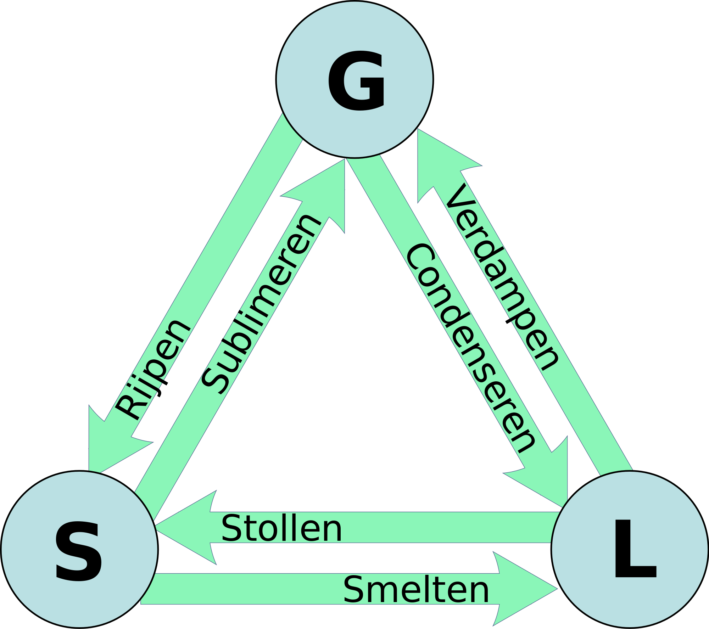

<div class="no_sidecard_main_content">
  <mat-card>
    <div>
      <h1>Faseovergangen</h1>
    </div>


    <div>
      <h2 (click)="handleViewSubject('fasen')">Fasen
        <mat-icon *ngIf="getShowSubject('fasen')">keyboard_arrow_up</mat-icon>
        <mat-icon *ngIf="!getShowSubject('fasen')">keyboard_arrow_down</mat-icon>
      </h2>
      <article *ngIf="getShowSubject('fasen')">
        <p>
          Water komt in de natuur voor als:<br>
          - Vaste stof: ijs.<br>
          - Vloeibaar: water.<br>
          - Gas: waterdamp.<br>
        </p>
        <p>
          De drie toestanden waarin je water (en andere stoffen) kunt tegenkomen, noem je fasen.
          Soms wordt de naam ‘waterdamp’ gebruikt voor een nevel die uit fijne druppeltjes bestaat, maar dat klopt niet.
          Waterdamp bestaat niet uit fijne waterdruppeltjes die je kunt zien, het is een onzichtbaar gas.
        </p>

        <mat-card class="youtube_clip">
          <iframe width="560" height="315" src="https://www.youtube.com/embed/CIwAph93d3Y" frameborder="0" gesture="media" allow="encrypted-media" allowfullscreen></iframe>
        </mat-card>
      </article>
    </div>

    <div>
      <h2 (click)="handleViewSubject('faseovergangen')">Fase-overgangen
        <mat-icon *ngIf="getShowSubject('faseovergangen')">keyboard_arrow_up</mat-icon>
        <mat-icon *ngIf="!getShowSubject('faseovergangen')">keyboard_arrow_down</mat-icon>
      </h2>
      <article *ngIf="getShowSubject('faseovergangen')">
        <p>
          Als ijs smelt, zie je water van fase veranderen: van vast wordt het vloeibaar. Daarom noem je smelten een fase-overgang.
          De volgende driehoek is belangrijk om te kennen. De g staat voor gas, de l staat voor liquid (vloeibaar) en de s staat voor solid (vast).
        </p>
        
        <p>
          Bij de meeste fase-overgangen kun je wel een voorstelling bij maken, maar sommige zijn iets lastiger voor je te zien:<br>
          - Smelten: ijs wordt water.<br>
          - Verdampen: water wordt waterdamp (denk maar aan het koken van water).<br>
          - Condenseren: waterdamp wordt water. Als je tegen een koude ruit aan blaast, zie je waterdruppeltjes ontstaan op het glas.<br>
          - Stollen: bijvoorbeeld gesmolten kaarsvet wordt vast.<br>
          - Rijpen: kleine ijskristallen aan een boom.<br>
          - Sublimeren: bij sneeuw, als daar een zonnestraal opstaat, kan het zo zijn dat het sneeuw deeltje direct ‘vervluchtigd’.
          Dat wil zeggen dat het direct een gas wordt. De vloeibare fase wordt dus overgeslagen.
        </p>

        <mat-card class="subject_questions">
          <p>
            1. Als ik ijsklontjes aan mijn drinken toevoeg, vindt er dan een faseovergang plaats?<br>
            <span *ngIf="getShowAnswers('faseovergangen')" class="subject_answer">Ja, het ijsblokje zal langzaam smelten.</span>
          </p>
          <p>
            2. Hoe noem je de faseovergang als de ramen beslaan in de auto?<br>
            <span *ngIf="getShowAnswers('faseovergangen')" class="subject_answer">Condenseren</span>
          </p>
          <p>
            3. In welke fase bevindt water zich bij -5 graden Celsius?<br>
            <span *ngIf="getShowAnswers('faseovergangen')" class="subject_answer">Vast</span>
          </p>
          <button mat-button (click)="handleShowAnswers('faseovergangen')">Toon antwoorden</button>
        </mat-card>
      </article>
    </div>

    <div>
      <h2 (click)="handleViewSubject('practica')">Practica
        <mat-icon *ngIf="getShowSubject('practica')">keyboard_arrow_up</mat-icon>
        <mat-icon *ngIf="!getShowSubject('practica')">keyboard_arrow_down</mat-icon>
      </h2>
      <article *ngIf="getShowSubject('practica')">
        <app-experiment-scheikunde-faseovergangen></app-experiment-scheikunde-faseovergangen>
      </article>
    </div>
  </mat-card>
</div>
